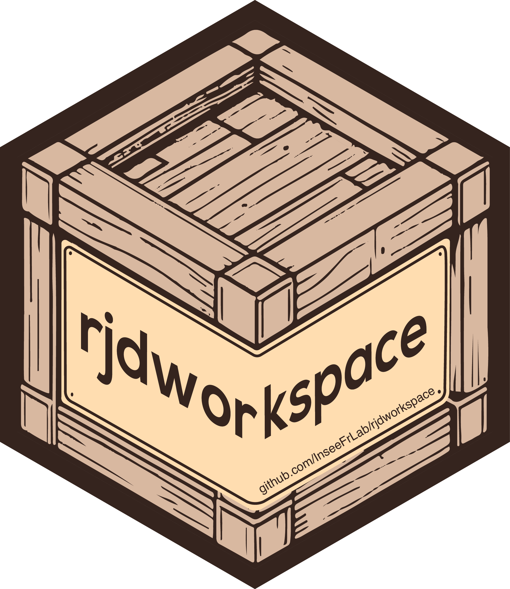

{rjdworkspace} 
Français 🇫🇷
Présentation
rjdworkspace propose un ensemble d’outils pour manipuler les workspaces de JDemetra+. Ce package utilise les archives .jar Java de RJDemetra en y ajoutant certaines fonctionnalités. En particulier, rjdworkspace permet de :
- mettre à jour toutes les metadata d’un workspace avec celles d’un autre (
update_metadata(),update_metadata_roughly()) ou mettre à jour les metadata d’un SaItem avec les metadata d’un autre SaItem (set_metadata()) - remplacer, supprimer ou ajouter des séries à un workspace (
remove_sa_item(),remove_all_sa_item(),replace_sa_item(),replace_series(),add_new_sa_item()) - copier / coller des séries d’un workspace à un autre (
transfer_series()) - récupérer et modifier les commentaires d’un SaItem (
get_comment(),set_comment()) - définir les spécifications d’un modèle contenu dans un SaItem (
set_spec()).
Installation
rjdworkspace s’appuie sur RJDemetra qui nécessite Java SE 8 ou une version ultérieure.
🎉 rjdworkspace est maintenant disponible sur le CRAN ! 🎉
Pour installer, il suffit de lancer la ligne de code suivante :
install.packages("rjdworkspace")Pour obtenir la version en cours de développement depuis GitHub :
# Si le package remotes n'est pas installé
# install.packages("remotes")
# Installer la version en cours de développement depuis GitHub
remotes::install_github("InseeFrLab/rjdworkspace")Autres informations
Pour une description plus complète des packages R pour JDemetra+ voir le document de travail Insee Les packages R pour JDemetra+ : une aide à la désaisonnalisation
English 🇬🇧
Overview
rjdworkspace provides a set of tools designed to manipulate JDemetra+ workspaces. It depends on the .jar files of RJDemetra and extends some functions. In particular, rjdworkspace allows to:
- update all metadata of a workspace with those contained in another one (
update_metadata(),update_metadata_roughly()) or update the metadata of a SaItem with the metadata contained in another SaItem (set_metadata()) ;
- replace, remove or add series in a workspace (
remove_sa_item(),remove_all_sa_item(),replace_sa_item(),replace_series(),add_new_sa_item());
- copy&paste series from a workspace to another one (
transfer_series()) - get and set the comment of a SaItem (
get_comment(),set_comment()); - set the specification of a model contained in a SaItem (
set_spec()).
Installation
rjdworkspace relies on RJDemetra that requires Java SE 8 or later version.
🎉 rjdworkspace is now available on CRAN! 🎉
To install it, you have to launch the following command line:
install.packages("rjdworkspace")To get the current development version from GitHub:
# If remotes packages is not installed
# install.packages("remotes")
# Install development version from GitHub
remotes::install_github("InseeFrLab/rjdworkspace")Autres informations
For a more comprehensive description of the R packages for JDemetra+ check the Insee working paper R Tools for JDemetra+: Seasonal adjustment made easier